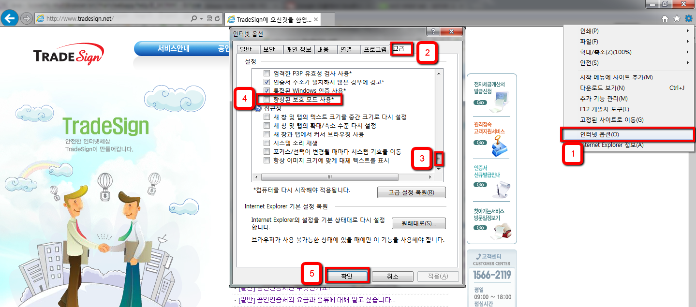

IE 버전확인
도구(오른쪽 상단의 톰니바퀴 아이콘)->Internet Explorer 정보
IE9 32bit 실행방법
C:\Program Files(X86)\InternetExplorer\iexplore.exe 마우스 오른쪽 클릭->바로가기 만든 후 바탕화면에 복사하고 사용
IE10 32bit 실행방법
IE10 일 경우 - 익스플로러에서 도구->인터넷 옵션->고급->향상된 보호모드 사용 해제->확인 